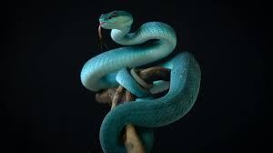

Las serpientes mas peligrosas

Las serpientes son un suborden de los reptiles que se caracterizan por ser vertebradas y por la ausencia de extremidades. Se cuentan 4 mil especies de estos animales.Las víboras conforman la familia Viperidae y se distinguen de otras serpientes por ser siempre venenosas. Son organismos poseedores de una dentición solenoglifa, lo cual hace referencia a la posición y forma que tienen sus colmillos inoculadores de veneno. En la actualidad, se tiene registro de 329 especies.Las culebras representan a la familia Colubridae. En este grupo, mucho más numeroso que el anterior, se suman mil 800 especies, aproximadamente. La constitución física de estos reptiles, comparada con la de las víboras, es uniforme, ya que no cuenta con ese ligero abultamiento de la parte media. A propósito de ello, la cabeza suele tener un diámetro muy similar al del resto del cuerpo.
Caracteristicas de las serpientes
Tienen la piel recubierta de escamas, un esqueleto que les proporciona mucha flexibilidad y una lengua bífida. Algunas especies matan a sus presas por constricción –por ejemplo las boas–, pero otras lo hacen mediante el veneno que inoculan con los dientes cuando muerden a sus víctimas. Todos los miembros de esta especie son animales carnívoros.
Ayuda
Características de las culebras/serpientes venenosas: cabeza en forma de triangulo o diamante pupilas de forma eliptica o como de gato colmillos móviles y largos hoyo facial localizado debajo de los ojos Características de las culebras/serpientes no venenosas: cabeza plana y lisa pupilas redondas no tienen colmillos, solo dientes pequeños
¿Que hacer?
Si es mordido por una de estas: QUE NO DEBE HACER: tratar de atraparla o matar la culebra/serpiente. Esto haría que fuera posible otra mordedura. cortar, succionar, apretar o colocar hielo en el lugar de la mordedura. QUE DEBE HACER: lavar el area con agua tibia y jabonosa. retirar cualquier joya o ropa que apretar. tratar de entablillar o inmovilizar el área afectada. levantar el área afectada por los menos hasta el nivel del corazón. buscar ayuda medica